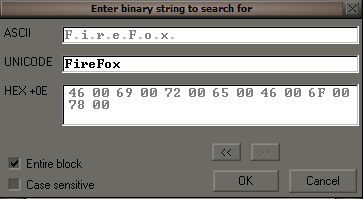
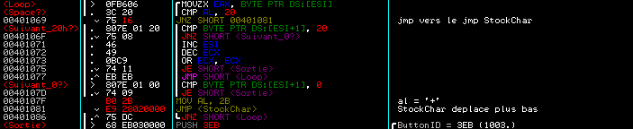
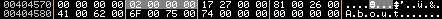

ReverseMe1 de Neitsa - Solution d'elooo

Téléchargez la cible ici !!
| Niveau | Outils | Auteur |
|---|---|---|
| Newbie avancé | Ollydbg, un éditeur hexadécimal et LordPe | elooo |
Sommaire du dur labeur...
- Allo allo ? Depannage Info Express, que puis-je faire pour vous ?
- Reversing bonus : privilégier Mozilla plutôt que Firefox
- Parsing de keywords
- Le menu EXIT
- Message d'alerte en cas d'EditBox vide
- Activation du menu ABOUT
- Dégrisage du sous-menu ABOUT et peaufinage de la bestiole
- Compatibilité de la recherche avec Internet Explorer
- Debuggage du sous-menu SEARCH
- Activer l'affichage des GREETZ
- Qui a droit à un coucou ? :p
Allo allo ? Depannage Info Express, que puis-je faire pour vous ?
Neitsa, afin de nous occuper, collés au radiateur la bière à la main car il fait beaucoup trop froid pour passer
ses journées dehors à s'émerveiller de la beauté de la nature, a décidé de nous mettre à l'épreuve sur un sympathique
ReverseMe.
Je vous propose de découvrir les vraies raisons de cette mise à l'épreuve. Il s'avère que la mission était à la base
plus interessée que ludique ou éducative (niark niark :P )
Voici donc ce qu'on y trouve dans le fameux fichier d'instructions :
Lisez-Moi !!
Bon, on n'a pas de temps à perdre, passons à l'attaque !
Juste une chose à dire pour ceux qui ont encore du mal avec les modifications sans éditeur hexadécimal, mais en totalité sous Ollydbg, la démarche est très simple :
- On sélectionne dans la fenêtre de dump (la fenêtre en bas à gauche) la partie qu'on compte modifier, puis on fait ctrl+E
- On modifie grace à la fenêtre d'édition qui apparaît
- On sauvegarde les modifications en sélectionnant dans la fenêtre de dump la partie qui a été changée, puis en faisant un clique-droit sur la fenêtre de dump -> "Copie to executable file"
Cette fois, on peut commencer à travailler :)

Reversing bonus : privilégier Mozilla plutôt que Firefox
Voici un screenshot de l'apparence du programme à l'origine.
Cet outil a pour but normalement d'effectuer des
recherches par mots clefs sur un certain forum. On constate qu'il est sensé être capable initialement d'effectuer ce
travail en lançant Internet Explorer, ou FireFox.
N'utilisant pas FireFox mais Mozilla, j'ai décidé de l'adapter à ma situation pour commencer.
ShellExecuteA va permettre d'executer un fichier. Cette fonction prend en paramètre six valeurs, dont une qui correspond au FileName, autrement dit un pointeur vers le nom du fichier à lancer.
On voit que "FireFox" est stocké en 00403132, donc on s'y rend,et on va remplacer "FireFox" par "Mozilla" tout d'abord.
Cette modification va permettre de lancer Mozilla au lieu de FireFox mais pour du travail propre, il serait préférable de modifier aussi FireFox par Mozilla sur l'interface graphique : en label du bouton check et dans le menu Browsers.
On fait alt+M pour faire apparaître la Memory map, et on peut voir que la section ressources débute en 00404000.
On se rend donc en 00404000 dans la fenêtre de dump (ctrl+G), et on y cherche "FireFox" :

La première occurence correspond à la string située en label du bouton check. Hop, on modifie :
On fait de même pour la deuxième occurence (le libellé dans le menu Browsers) :
Et voilà, on obtient bien ce qu'on voulait :
Parsing de keywords
L'objectif ici est de faire en sorte que lorsqu'on rentre plus d'un mot-clef dans l'editbox, ils soient tous récupérés
mais que l'espace qui permet de les séparer soit remplacer par un '+'.
Au niveau du code, à peine plus bas que le GetDlgItemTextA, on peut voir :
Il faudrait donc pouvoir rajouter avant le label StockChar, que si le caractère courant est un espace (0x20), on
mettra 0x2B ('+') dans al, avant de passer dans le code du label StockChar.
Par contre on voit bien qu'on n'a pas de place ici, il va donc falloir ré-écrire sur le code existant pour faire jumper
là où il y a de la place afin de rajouter du code.
Ici par exemple :
/*40127F*/ ASCII "Houla... ben y'a" /*40128F*/ ASCII " de place au cas" /*40129F*/ ASCII " ou... :-)",0 /*4012AA*/ DB 00 /*4012AB*/ DB 00 /*4012AC*/ DB 00 /*4012AD*/ DB 00 /*4012AE*/ DB 00 /*4012AF*/ DB 00 /*4012B0*/ DB 00 /*4012B1*/ DB 00
Au niveau des modifications, voilà ce que j'ai fait :

Le menu EXIT
Neitsa nous informe que le menu EXIT fonctionne mal. Hum après test, je dirais même qu'il ne fonctionne pas du tout :)
L'enjeu ici est donc de le rendre efficient.
Tout d'abord nous allons partir à la recherche de l'ID du sous-menu afin de voir si du code y est déjà associé dans la
gestion des évènements.
Voici l'ID su sous-menu :
Autrement dit, 0x2712. On voit que dans le code, il y a effectivement un test dessus sur la gestion des évènements :
Marf, le sous-menu EXIT minimise la fenêtre mais ne ferme pas le programme !
Voici donc les modifications que j'ai faites :
Pourquoi un call 00401480 ? Mais parce que le jmp ExitProcess s'y trouve à cette endroit dans l'IAT :)
Message d'alerte en cas d'EditBox vide
Neitsa aimerait qu'on fasse afficher une MessageBox si on clique sur le bouton Search ou sur le sous-menu Search sans
avoir rentré au préalable de mot-clef dans l'EditBox.
On va déjà partir en quête du message à afficher. Apparemment le texte à afficher et la caption de la fenêtre ont déjà
été déclarés.
Effectivement on n'a pas à chercher longtemps :
La caption se situe en 004030D2 et le texte en 004030BA.
Si on veut rajouter une MessageBox, il faut également chercher à quel moment on devra jumper vers le bout de code qu'on
va rajouter.
Le contenu de l'EditBox est récupéré grace à GetDlgItemTextA. Cette fonction d'api renvoit la longueur de la string entrée dans l'EditBox,
donc si la longueur est de 0, c'est là qu'il faut jumper pour faire apparaître la MessageBox.
Par contre, ô miséricorde, pas de trace de MessageBoxA dans l'IAT, il va falloir l'importer de nous-même...
M'étant interdit d'utiliser LordPe pour rajouter l'import, on va voir comment s'y prendre pour le faire à la main.
On va tout de même utiliser LordPe pour voir facilement les infos sur les sections :
On peut déjà hypothéser que l'Import Table se trouve dans la section .rdata. Enfin... allons voir concrètement ce qu'il en est.
On cherche la signature "PE\00" dans l'éditeur hexadécimal. On constate qu'elle se trouve en 0xD0.
On ajoute 0x80 à 0xD0 afin de récupérer la RVA de l'Import Table. 0x80 + 0xD0 = 0x150. Dans l'éditeur hexa, à l'offset 0x150, le
dword est 50200000, ce qui donne, une fois remis dans l'ordre, une RVA de l'Import Table = 0x2050.
On peut voir que la Virtual Address du début de la section rdata est de 0x2000 et qu'elle se termine en 0x3000. L'Import
Table se trouve donc bien dans la section rdata.
L'offset de l'Import Table = 0x2050 - 0x2000 + 0xA00 = 0xA50
Si on se rend à l'offset 0xA50 dans l'éditeur hexa, on y voit :
Ce que j'ai volontairement noirci, c'est l'Image Import Descriptor. Je vais pas faire un cours sur le format PE, par contre
pour ceux qui sont complètement paumés là, je vous encourage à vous documenter sur le PE Header et la table d'imports !
Les seules valeurs dont on a réellement besoin ici, se sont le dword Name (RVA de la string qui correspond au nom de la dll), et le FirstThunk
(RVA du pointeur vers le nom de la première fonction d'Api de la dll concernée). Le reste peut être mis à zéro sans souci (là encore je ne
vais pas rentrer dans les détails, si ça vous intrigue, documentez-vous !).
Dans l'Image Import Descriptor, on voit donc 4 entrées de 5 dwords, une entrée pour chaque dll, puis ensuite 5 dwords nuls qui correspondent
à la fin de l'Image Image Descriptor.
Voici un schéma de la structure de l'Image Import Descriptor :
typedef struct _IMAGE_IMPORT_DESCRIPTOR {
union {
DWORD Characteristics; // 0 for terminating null import descriptor
DWORD OriginalFirstThunk; // RVA to original unbound IAT (PIMAGE_THUNK_DATA)
};
DWORD TimeDateStamp; // 0 if not bound,
// -1 if bound, and real date\time stamp
// in IMAGE_DIRECTORY_ENTRY_BOUND_IMPORT (new BIND)
// O.W. date/time stamp of DLL bound to (Old BIND)
DWORD ForwarderChain; // -1 if no forwarders
DWORD Name;
DWORD FirstThunk; // RVA to IAT (if bound this IAT has actual addresses)
} IMAGE_IMPORT_DESCRIPTOR;
typedef IMAGE_IMPORT_DESCRIPTOR UNALIGNED *PIMAGE_IMPORT_DESCRIPTOR;
Ce qui se trouve en 0xA00 c'est l'Import Address Table, vers laquelle pointe les différents FirstThunks.
L'Import Address Table contient des pointeurs vers toutes les strings des fonctions d'Api, précédés par leur hint (le word
qui précède le nom de la fonction d'Api).
En a 0XAB4, c'est l'"Unbound" Import Table, à laquelle se réfèrent les différents OriginalFirstThunks.
Les OriginalFirstThunks, on va les mettre à zéro, donc toute cette "Unbound" Import Table, on va pouvoir l'effacer. Ce
qui nous permettra de nous faire de la place pour rajouter notre import.
Donc premier travail, on met les OriginalFirstThunks à zéro et on efface l'"Unbound" Import Table :
On rajoute nos strings dans le tableau des strings : une pour le nom de la dll, l'autre pour le nom de la fonction :
Et il va falloir décaler nos Image Import Descriptor car du coup on a une nouvelle RVA à ajouter à l'Import Adress Table : celle du pointeur vers le hint de MessageBoxA (hint laissé à zéro : le hint est facultatif) :
En rouge, on a le rajout dans l'Import Adress Table : 0x20EA - 0x2000 + 0xA00 = 0xAEA
Noirci, on peut voir nos Image Import Descriptor décalés.
Il nous reste à rajouter un Image Import Descriptor pour le nouvel user32.dll qu'on veut importer, et à changer la valeur du dword contenu en 0x150 étant donné que l'Import Table a été décalée :
On vérifie notre travail :
Eheh on va pouvoir commencer à s'amuser avec notre MessageBoxA :)
on va rajouter un jmp vers la RVA du pointeur du nom de la fonction d'Api.
On est maintenant en mesure d'utiliser la fonction d'Api comme bon nous semble.
Mes modifications :
Et ça marche :P :
Activation du menu ABOUT
Voyons voir comment se présente les menus dans le dump hexa :
Le menu File est précédé par un byte à 0x26.
Le byte à 0x26 permet au menu File d'être accessible par ctrl+F (première lettre du menu).
Le dword qui se situe encore avant contient l'identificateur, et le dword précédent est à 0
Le menu Browsers n'est pas précédé par un byte à 0x26, donc ce menu n'est pas disponible en raccourci clavier ctrl.
On repère facilement son identificateur, et encore avant le dword à 0.

Le menu About est précédé d'un byte à 0x26 : un raccourci clavier a donc été mis en place, par contre le dword précédant l'identificateur du menu est à 2.
Mettons ce bit à 0 afin qu'il récupère le même bit d'état que les autres menus :
Mission accomplie, le menu About est accessible. Passons à la suite.
Dégrisage du sous-menu ABOUT et peaufinage de la bestiole
Dégrisage du sous-menu ABOUT
On voit bien que le sous-menu ABOUT est grisé... il va donc falloir le dégriser.
Si on compare le sous-menu GREETZ avec le sous-menu ABOUT dans le dump hexa, on s'aperçoit que là où pour le sous-menu
GREETZ un bit est à 0, il est à 1 pour le sous-menu ABOUT :
Donc mettons ce bit à 0 :
On teste et c'est effectivement correctement dégrisé :
Peaufinage de la bestiole
Quand on clique sur le sous-menu ABOUT, ça fonctionne très bien dorénavant mais qu'est-ce que c'est immonde !!
Le texte est perdu au milieu des infos fournies dans le ShellAbout, la boîte de dialogue est énorme comparativement
au programme en lui-même, etc.
Ayant importé précédent la fonction d'Api MessageBoxA, je me suis dit que ça serait carrément plus joli de remplacer ce
vilain ShellAbout par une MessageBox...
Donc voici les modifications que j'y ai apporté :
C'est plus joli comme ça je trouve :)
Compatibilité de la recherche avec Internet Explorer
Bon par contre il y a un souci majeur : la fonction Recherche avec Internet Explorer ne marche du tout :
il ouvre malgré tout Mozilla (ou FireFox), et en plus ne passe pas les mots-clefs recherchés dans l'url.
Quand on sait qu'Internet Explorer reste encore le navigateur le plus utilisé, on peut considérer celà comme un
problème de taille...
Donc pas le choix, 'va falloir arranger ça !
Au niveau du code, on voit ceci :
On comprend vite le problème :
Si IE est selectionné, on s'aperçoit que la string qui contient l'url est celle dépourvue des mots-clefs qui devraient
lui être concaténés, et puis comme argument FileName on a toujours "Mozilla" et non "Iexplore" !
Par contre on va avoir un souci au niveau de la place : en effet, il faudrait pouvoir remplacer, pour commencer :
004010D0 . 68 EE304000 PUSH 004030EE
Par
004010D0 . FF35 54334000 PUSH DWORD PTR DS:[403354]
Ce qui nous demande un bit de plus... mais on n'a pas la place :)
C'est rageant de devoir rediriger le code juste pour un bit... réfléchissons !
On a un test inutile ici :
004010C7 . 83F8 01 CMP EAX, 1 004010CA . 75 1B JNZ SHORT 004010E7 ; Test inutile
En effet, on ne peut pas ne pas sélectionner de bouton radio, ce qui signifie que si le bouton radio "Mozilla" n'est pas
choisi, c'est que forcément ça sera celui de "IE" qui sera sélectionné.
Donc on peut écraser le JNZ sans souci... et ça nous libère 2 bits ! On n'en voulait qu'un, mais ce n'est pas grave :)
Et ça donne, au niveau de mes modifications :
Debuggage du sous-menu SEARCH
Quand on clique sur le sous-menu SEARCH, il ne se passe rien, alors que l'effet devrait être le même qu'un appui
sur le bouton SEARCH.
Cherchons dans le dump hexa l'identificateur de ce sous-menu, afin de voir si un évènement lui ait déjà associé :
Son identificateur est 0x2716, et effectivement aucun code ne lui ait associé, il va donc falloir s'en charger.
Quand on clique sur le bouton SEARCH de la fenêtre principale, que se passe-t-il ?
En fait, si le bouton a été cliqué, on entre dans le call en 00401000.
Notre travail consiste donc à rajouter un test pour voir si le sous-menu SEARCH a été cliqué, et si c'est le cas, on jumpe
en 00401191 pour appeller le fameux call en 00401000.
Tout à l'heure en remplaçant notre ShellABout par une MessageBox, on s'est libéré de la place, on va donc pouvoir l'utiliser pour
rajouter notre test :)
Mes modifications :
Activer l'affichage des GREETZ
Il ne nous reste plus qu'à activer l'affichage des GREETZ.
L'identificateur du sous-menu GREETZ est 0x2718:
Et au niveau du code associé on a :
Là ça a le mérite d'être clair, l'évenement associé au click sur le sous-menu GREETZ est de ne rien faire...
On va donc rediriger vers un endroit ou on pourra rajouter du code.
Par contre y'a un souci : on a seulement 3 bits de libre pour faire un jmp :
00401232 . 90 NOP ; si GREETZ clique, on ne fait rien ! 00401233 . EB 3E JMP SHORT 00401273
Si on fait un jmp long, on n'a pas assez de place... on a juste assez pour un jmp short (ça prend 2 bits seulement),
et ça tombe bien, il nous reste encore de la place là où on avait viré le ShellAbout.
Donc on pourrait mettre un jmp short vers cet emplacement où on a encore des nops.
Par contre on n'aura toujours pas assez de place pour écrire le code complet ici... Donc à l'endroit où y'a des nops, on
mettra un jmp long vers le code redirigé :) C'est une solution de secours, j'ai jamais dit que c'était propre ;)
On sait comment on va s'y prendre, par contre Neitsa nous dit que le texte à afficher se trouve déjà initialisé dans
le programme. Il va falloir le trouver.
Donc on va se rendre dans la section data avec la fenêtre de dump, et hop, on tombe directement dessus :)
Maintenant on a tous les éléments nécessaires ; voici mes modifications (j'ai choisi une MessageBox de nouveau, pour l'affichage des Greetz) :
Voyons voir à quoi ça ressemble...
Mission accomplie :)
Le programme "reversé" est téléchargeable LA.
Qui a droit à un coucou ? :p
Qui veut :)
Cordialement,
elooo